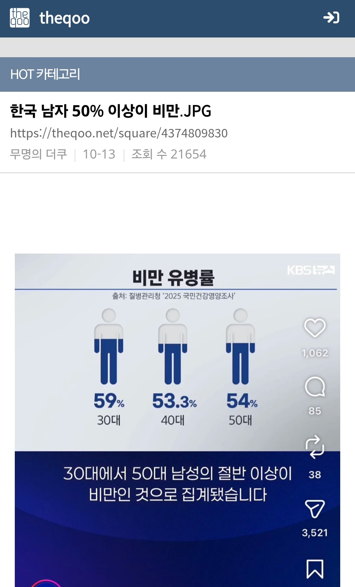

"한국 남자 뚱뚱하다"
아무리 못해도 주에 한 번은 핫게/인기글 등등 감
"'남'학생들 혐오/조롱 문화가 문제다"
얘도 그렇고
비슷한 꾸준글로는
손발톱 깎을 줄 모르는 한국남자들 글(똑같은 캡처 계속 올라옴)
손 안 씻는 한국남자들 글
임산부 배려석 앉는 한국남자들 글
등등이 있다
이러면서 남성혐오란 존재하지 않는다고 하는 게 웃길 뿐..

"한국 남자 뚱뚱하다"
아무리 못해도 주에 한 번은 핫게/인기글 등등 감
"'남'학생들 혐오/조롱 문화가 문제다"
얘도 그렇고
비슷한 꾸준글로는
손발톱 깎을 줄 모르는 한국남자들 글(똑같은 캡처 계속 올라옴)
손 안 씻는 한국남자들 글
임산부 배려석 앉는 한국남자들 글
등등이 있다
이러면서 남성혐오란 존재하지 않는다고 하는 게 웃길 뿐..
괜히 여자 히키코모리 비율이 압도적으로 많은게 아님 남자 찐따는 예상이라도 가능한데 여자 찐따는 진짜 심연중에 심연임
일코하면 피할 수가 없으니 티내 줘서 다행이라 생각하자 ㅋㅋㅋ
아들 짐승새끼론도 많이 올라왔지 ㅋㅋ
남학생 혐오조롱 문화는 근거없이 지들끼리 떠드는 개소리지만 남성 비만율은 통계도 다 있는 팩트인데 뭐 반대로 노산 글 쓴다고 남자들이 자존감 채우는 건 아니잖아 비만율도 같은거임 ㅋㅋ 그러니까 살빼자
꾸준글로 올라온다는 건 주기적 조리돌림이 목적이란 얘긴데 그 조리돌림의 목적이 뭐겠음
노산은 남자랑은 아무상관없는 천룡인들만의 문제이고, 비만문제는 남혐하는 천룡인분들 자신이 매우 높은 비중으로 겪고계신 문제인데, 어떻게 그 둘을 동치로 두고 비교를...
근데 노산 글 올라오면 꼭 여혐 소리도 따라오잖아
비만율 통계가 어떻게 도출되는지는 알고 있고?ㅋㅋㅋ
남자가 임산부 배려석 앉는다는게 ㄹㅇ 어이없음. 지하철 타고 다니면서 남자가 임산부 배려석 앉은걸 목격한건 단 1번 할애비 앉아있는거임. 대부분 아주매미 할매미들 앉아있고 얼마전엔 젊은년이 임산부석 옆에 앉고 임산부석에 지 짐 올려놓은거 봄,
한 60% 이상은 과체중일거 같긴한데
저거 비만 기준이 BMI라서 김종국도 BMI로 치면 비만임
체지방률로 측정해야되는데 절대 안하지 ㅋㅋ
체지방률 기준이면 결과가 반대로 나옴 ㅋㅋ
체지방률은 여자가 태생적으로 높을수밖에 없으니 당연하지.
그래서 실제 정밀진단에는 오히려 허리둘레, 혈압, 콜레스테롤 수치같은 거를 훨씬 많이 씀.
근육은 너무 모자라지 않은 정도, 체지방은 너무 많지 않은 정도에서 ㅇㅇ
쓰니 산부석에 앉는 비만에 손안씻는 흡연남이야?
저기서 말하는 불링이 여자들이 주로 하는 불링이란거임ㅋㅋㅋㅋ
뇌속에 남자에 대한 데이터가 없는거지
그래서 저열한짓을 하는 남자라는 프레임을 씌울려 해도 남자들은 어떤 불링을 하는지 모르니 자기들이 하는걸 그대로 꺼내온다 ㅋㅋㅋ
한국 남자 뚱뚱하다? 오케이. 근데 ‘넌’ 날씬한가?
그냥 온라인에 쳐 박혀서 안나오면 좋겠긴해... 정상적인 여성들은 저딴거 안하는데 지들끼리 모여서 심연의 세계에서 만나본 적 없는 한남소추3.6cm 고추에 느끼지도 못하면서 평생 혼자 살면 좋겠다
과체중 맞잖아 (판교 배불뚝짤)
어제 여성 피해자가 많다고 남자 비만 타령 하는게 그럼 정상적인 행동이냐?
몸무게 숫자보단 체지방 제지방 근골격이 중요하덩데
손 안씻는거 팩트긴한데 한남 한정이 아니라 그냥 남자특임
백인새끼들은 볼일 보고 손 씻으면 게이되는 줄 아는거 같음
근데 비만율 저거 웃긴 게 bmi로만 따지는데 운동해서 근골격량 48%에 체지방량 14%인데도 과체중이라고 비만 뜸
자존감 열심히 채워라 20년만 지나면
느그 보살펴주는 부모도 죽고
먹고 죽을래도 먹을게 없을거다 ㅋㅋㅋ
택배나 훔치지말라해라
여초 욕하면서 하는짓은 여초랑 똑같음 ㅋㅋㅋ자정작용이 불가능함 ㅋㅋㅋㅋㅋㅋㅋ
머라노 ㅋㅋㅋㅋㅋㅋㅋㅋ 수건이나 훔처가지말라
남초에도 2030 여성들 감사함 낮고 신경증 높다는 2019년 연구 맨날 올라오는데
남초에도 여자욕하는 여혐자료 하루에 수십개씩 야갤?같은 특정 커뮤에는 수백개씩 쏟아지는데 뭐..
현대의 인터넷 문화가 뭔가 잘못된거지...
남초에 여혐이 없다는 이야기가 아니라
페미니즘 진영에서 오래전부터 주장해 온 것 중 하나가 바로
남혐은 존재하지 않는다는 거잖아
남혐은 애초에 성립할 수 없는 개념이고
역사적으로도 존재한 적이 없으며
현재도 존재하지 않고
앞으로도 존재할 수 없다는 식으로
여러 근거를 들어 남혐의 존재 자체를 부정해 왔으니
본문은 그 주장에 대한 반박이 아닐까?
https://m.edaily.co.kr/News/Read?newsId=01226726619435568&mediaCodeNo=257
"여성은 사회적 약자…'남혐'은 존재할 수 없는 개념"
https://www.hankookilbo.com/news/article/201812121190093689
연구실 문에 '페미니스트다' 쓴 교수 “남혐은 없어”
이 뿐만 아니라 윤김지영 교수, 이나영 교수, 손희정 연구원, 정희진 여성학자 등
한국 페미니즘 진영에서 영향력 있는 학자들이 남혐이라는 개념의 성립 여부를 두고
공개적으로 성립하지 않는다 내지는 해도 상관없다라고 비춰지거나 이용당 할 수 있고
오히려 조장하는 듯한 견해를 밝혀 왔다는 점도 생각해 봐야지
이걸 동일선상으로 주장하는데
도대체 남초들이나 남성 학자들이
언제 여혐이 존재하지 않는다 내지는 해도 상관없다라고 주장했냐고?
개드립에서 여혐은 단 한 번도 존재한 적이 없고
애초에 성립할 수도 없는 개념이라고 주장하는 개붕이가 대체 어디 있어?
오히려 여혐이 지나치면 눈쌀 찌푸리는 개붕이들은 많이 있어
반면 페미니즘 진영에서는 남혐이라는 개념 자체가 성립하지 않는다고 주장하는 사람들이 분명히 존재하고
이런 주장도 최근에 갑자기 등장한 게 아니라 오래전부터 반복되어 왔으며
그저 이게 철 없는 일부 회원들이나 그저 여초의 주장이라고 할 수도 없는데
저렇게 공신력 있는 여성계 학자들과 여성계 시민단체들도 나서서 거의 그렇게 생각하고 있다고
당장 더쿠나 여성시대 같은 여초 커뮤니티에서도 여혐은 잘못된 것이지만
남혐은 혐오가 아니며 혐오로 성립할 수 없으며 여혐에 대한 저항이므로
올바르고 바람직한 것이라고 오히려 권장하는 주장을 어렵지 않게 볼 수 있어
이걸 도와주는게 바로 이런 실상은 모른채
자기들이 중립충인 것처럼 착각하는 영포티들이야
남초 커뮤니티에도 여성혐오적인 표현이 존재하고
그게 지나치면 불쾌해하거나 비판하는 사람들도 있어
적어도 여혐이라는 개념 자체가 존재할 수 없다고 주장하는 것과는 다르다는 거야
여초 커뮤니티에서는 남성에 대한 적대적인 표현을 혐오로 인정하기는커녕
정당한 저항이나 비판으로 해석하면서 오히려 긍정적으로 평가해
그런데 이런 차이는 전혀 고려하지 않은 채
단순히 남초에도 혐오가 있고 여초에도 혐오가 있으니 결국 둘 다 똑같다는 식으로 결론 내리는 건
어린 여자들에게만 친절하고 남자들에겐 매우 엄격하고 꾸짖는 영포티들이 실상을 모르고 스윗하게 해석하는거지
자기들은 어차피 알 빠 아니니깐 말야
그런 영포티들은 여초가서 잘못을 꾸짖긴 하니?
일방적으로 젊은 남자들에게만 꾸짖고 혼내고
스스로를 훌륭한 중립충이라고 생각하고
속으로 자화자찬하는 영포티들 지겹다 지겨워
만약 너도 남혐은 역사적으로 존재한 적도 없고 앞으로도 성립할 수 없으며
따라서 남성을 성별만으로 비하하고 조롱하는 행위조차 혐오가 아니라
올바른 것이라서 교과서에 실어서 모든 아이들에게 오히려 그렇게 하도록 어릴때부터 가르쳐서
모두가 남혐을 하는 인식을 갖춰줘야 바람직한 사회가 된다라 생각한다면
그래 이게 더쿠와 여시가 꿈에 바래왔던 것들인데 그 사회가 너의 마음에 든다면 니 말이 다 옳아
어제 지하철에 시발 앞에 머리냄새 ㅈㄴ나는 여자가 더쿠하고 있더라 시이발 냄새때문에 뒷통수후릴뻔 제발씻거자녀라 안에선커뮤해더 정상인인척하거댕겨라시이발